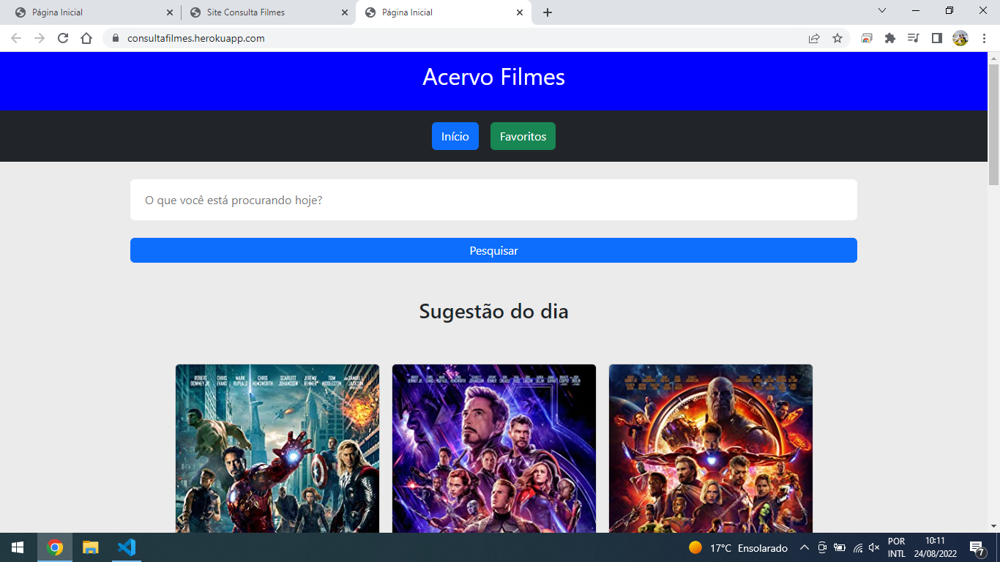

Este site foi desenvolvido em um "challenge" de uma vaga de emprego,
onde o intuito era consumir a api da OMDB, possibilitando consultar
filmes, guardar filmes nos favoritos e remover favoritos.
O desafio era apenas para o backend, porém desenvolvi o Front-End para
poder testar e melhorar a experiência.

Desenvolvido em REACT com TypeScript, e utilizado algumas bibliotecas para auxiliar no desenvolvimento.
Acesse o código fonte no GITHUB
Desenvolvido em NODEJS com TypeScript, e utilizado algumas bibliotecas para auxiliar no desenvolvimento.
Acesse o código fonte no GITHUB